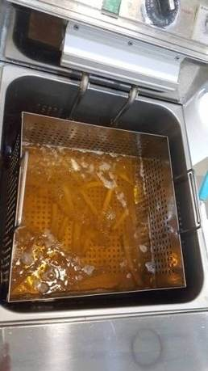
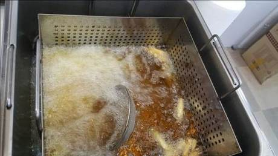
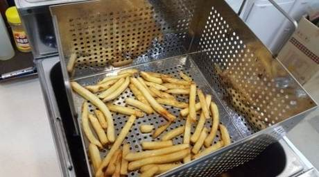
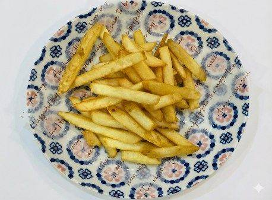
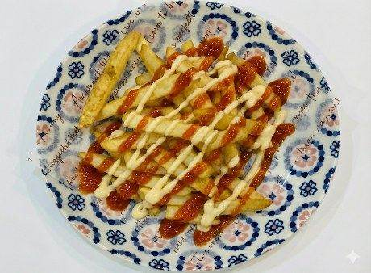
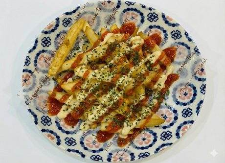

| 메뉴명 | 칠리갈릭 프라이 |
|---|---|
| 판매가격 | 5,500원 |
| 원재료 | 냉동감자튀김, 스위트칠리소스, 갈릭디핑소스, 파슬리 |
| 사용 부자재 | 덮밥접시, 소스볼 |
| 메뉴특징 | 두툼한 감자튀김에 칠리소스와 갈릭디핑소스를 첨가한 새콤, 달콤, 짭짤한 메뉴 |
조리방법

1
포션한 냉동 감자튀김 1봉(240g)을 꺼내 180도 튀김기에 넣고 4분간 튀겨준다.
포션한 냉동 감자튀김 1봉(240g)을 꺼내 180도 튀김기에 넣고 4분간 튀겨준다.

2
1분 정도 지나서 뭉쳐 있는 감자튀김을 흔들어 풀어준다.
1분 정도 지나서 뭉쳐 있는 감자튀김을 흔들어 풀어준다.

3
기름을 충분히 털어 제거해준다. (약 30초 정도)
기름을 충분히 털어 제거해준다. (약 30초 정도)

4
접시에 유산지 1장을 깔고 감자튀김을 담아준다.
접시에 유산지 1장을 깔고 감자튀김을 담아준다.

5
칠리소스 60g, 갈릭디핑소스 20g을 지그재그로 뿌려준다.
칠리소스 60g, 갈릭디핑소스 20g을 지그재그로 뿌려준다.

6
파슬리를 뿌려 제공한다.
( 포크, 냅킨 제공)
※ 소스 따로 제공하지 않음
파슬리를 뿌려 제공한다.
( 포크, 냅킨 제공)
※ 소스 따로 제공하지 않음